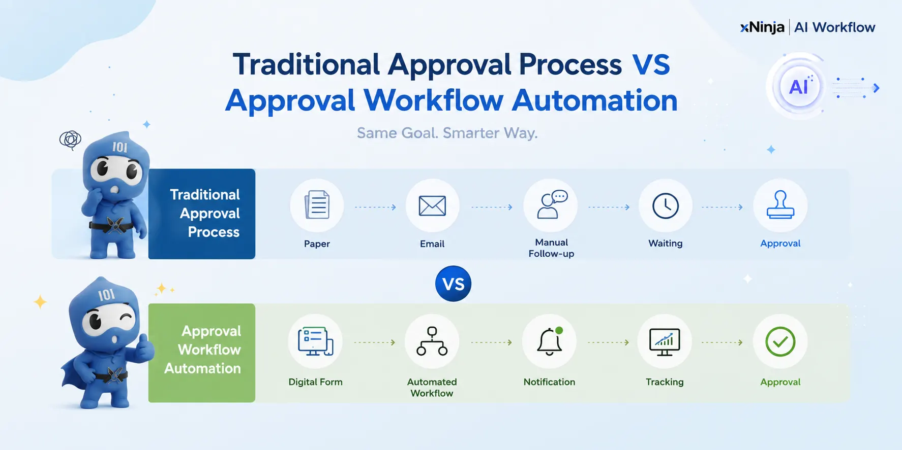

ระบบอนุมัติอัตโนมัติกำลังกลายเป็นเรื่องสำคัญอันดับต้น ๆ ขององค์กรที่ต้องการเพิ่มประสิทธิภาพการดำเนินงาน ลดงานที่ทำด้วยมือ และเร่งการเปลี่ยนผ่านสู่ดิจิทัล
AI Taiwan Future Commerce Expo 2026 | ค้นพบความต้องการกระบวนการทางธุรกิจที่ชาญฉลาดยิ่งขึ้น
วันที่:24–26 มิถุนายน 2026
เวลา:9:00–17:00
สถานที่:Taipei Expo Dome
หมายเหตุจากบรรณาธิการ: ข้อมูลเชิงลึกในบทความนี้มาจากการพูดคุยกับเจ้าของธุรกิจ ผู้จัดการ และผู้เชี่ยวชาญที่แวะเยี่ยมชมบูธ xNinja ระหว่างงาน AI Taiwan Future Commerce Expo 2026

ในงาน AI Taiwan Future Commerce Expo 2026 เรามีโอกาสได้พบกับเจ้าของธุรกิจ ผู้จัดการ และผู้เชี่ยวชาญจากหลากหลายอุตสาหกรรม จากการพูดคุยกับผู้เข้าชมบูธ เราพบว่าองค์กรทุกขนาดต่างเผชิญความท้าทายเดียวกัน:
เมื่อธุรกิจเติบโตขึ้น ขั้นตอนการอนุมัติก็ซับซ้อนขึ้น ทำให้การรักษาประสิทธิภาพ ความโปร่งใส และความสม่ำเสมอเป็นเรื่องยากขึ้น
หลายบริษัทกำลังมองหาโซลูชันที่ใช้งานได้จริง ที่ช่วยลดงานซ้ำซ้อน ปรับปรุงการสื่อสารภายใน และเร่งการเปลี่ยนผ่านสู่ดิจิทัล โดยไม่ต้องผ่านโครงการติดตั้งระบบที่ยาวนานหรือซับซ้อน
นี่คือจุดที่ xNinja AI Workhub เข้ามาช่วยองค์กรสร้างการดำเนินงานที่ชาญฉลาดและมีประสิทธิภาพมากขึ้น ขับเคลื่อนโดย xNinja AI Agent โดย xNinja AI Workhub รวบรวม Master Skills ที่เพิ่มขึ้นอย่างต่อเนื่อง เพื่อช่วยให้พนักงานทำงานประจำวันได้ง่ายขึ้น เพิ่มผลิตภาพ และสนับสนุนการเปลี่ยนผ่านสู่ดิจิทัล
ปัจจุบัน xNinja มี Master Skills เช่น xNinja.Business Process Management และ xNinja.Knowledge Management พร้อมความสามารถด้าน AI อื่น ๆ ที่พัฒนาอย่างต่อเนื่อง เพื่อรองรับความต้องการทางธุรกิจที่หลากหลายในอนาคต
ทำไมธุรกิจจึงต้องมีระบบอนุมัติอัตโนมัติ
ขั้นตอนการอนุมัติแบบดั้งเดิมมักอาศัยอีเมล เอกสารกระดาษ สเปรดชีต หรือการติดตามด้วยตนเอง แม้วิธีเหล่านี้อาจใช้ได้กับทีมขนาดเล็ก แต่มักขาดประสิทธิภาพเมื่อองค์กรขยายตัว

ระบบอนุมัติอัตโนมัติช่วยปรับปรุงการดำเนินธุรกิจในแต่ละวันอย่างไร
| ขั้นตอนการอนุมัติแบบดั้งเดิม | ระบบอนุมัติอัตโนมัติ |
|---|---|
| คำขออนุมัติถูกส่งผ่านเอกสารกระดาษ อีเมล หรือข้อความแชต | คำขออนุมัติได้รับการจัดการผ่านขั้นตอนงานดิจิทัลที่มีโครงสร้างชัดเจน |
| พนักงานต้องคอยติดตามผู้อนุมัติด้วยตนเอง | การแจ้งเตือนอัตโนมัติช่วยเตือนผู้ที่รับผิดชอบ |
| ยากที่จะทราบสถานะการอนุมัติในปัจจุบัน | การติดตามแบบเรียลไทม์ช่วยให้มองเห็นกระบวนการได้ชัดเจนขึ้น |
| แต่ละแผนกอาจใช้วิธีการทำงานที่แตกต่างกัน | ขั้นตอนงานที่เป็นมาตรฐานช่วยเพิ่มความสม่ำเสมอ |
| เอกสารอาจสูญหายหรือค้นหาได้ยาก | บันทึกดิจิทัลจัดการและเข้าถึงได้ง่ายกว่า |
| การกรอกข้อมูลด้วยมือเพิ่มงานซ้ำซ้อน | ระบบอัตโนมัติช่วยลดงานที่ต้องทำด้วยมือ |
| ผู้จัดการต้องเสียเวลาตรวจสอบความคืบหน้า | รายงานและการติดตามช่วยให้มองเห็นภาพรวมการดำเนินงานได้ดีขึ้น |
ด้วยระบบขั้นตอนงานอัตโนมัติ ธุรกิจสามารถ:
- สร้างมาตรฐานให้กับขั้นตอนการอนุมัติ
- ลดงานธุรการที่ซ้ำซ้อน
- เพิ่มความโปร่งใสของกระบวนการ
- ตัดสินใจได้เร็วขึ้น
- เก็บบันทึกดิจิทัลได้ครบถ้วน
- เพิ่มประสิทธิภาพการดำเนินงาน
ทำไมธุรกิจทุกขนาดจึงต้องมีระบบขั้นตอนงานอัตโนมัติ
แต่ละองค์กรเผชิญความท้าทายในการดำเนินงานที่แตกต่างกัน ขึ้นอยู่กับขนาดและระยะการเติบโต
| ขนาดธุรกิจ | ความท้าทายหลัก | สิ่งที่ต้องการ | xNinja ช่วยได้อย่างไร |
|---|---|---|---|
| ธุรกิจขนาดเล็ก | ทรัพยากรจำกัด งานที่ทำด้วยมือ และความกังวลเรื่องระบบที่ซับซ้อน | วิธีเริ่มต้นการเปลี่ยนผ่านสู่ดิจิทัลที่ง่าย | xNinja ช่วยเร่งการเปลี่ยนผ่านสู่ดิจิทัลด้วยการสร้างแบบฟอร์มโดยมี AI ช่วยและการสนับสนุนด้านกระบวนการ |
| ธุรกิจขนาดกลาง | ทีมที่ขยายตัว การประสานงานที่มากขึ้น และกระบวนการที่ไม่สม่ำเสมอ | วิธีสร้างมาตรฐานและปรับปรุงการดำเนินงาน | xNinja ช่วยให้กระบวนการทางธุรกิจง่ายขึ้นและลดงานซ้ำซ้อน |
| องค์กรขนาดใหญ่ | การดำเนินงานที่ซับซ้อน ข้อมูลจำนวนมาก และความท้าทายด้านการจัดการองค์ความรู้ | วิธีจัดการกระบวนการและข้อมูลที่ชาญฉลาดยิ่งขึ้น | xNinja ช่วยให้พนักงานเข้าถึงข้อมูลได้เร็วขึ้นและเพิ่มประสิทธิภาพการดำเนินงาน |

เพื่อช่วยให้องค์กรรับมือกับความท้าทายในการดำเนินงานเหล่านี้ xNinja AI Agent มอบความสามารถเฉพาะทางผ่าน Master Skills
xNinja.Business Process Management — เร่งการเปลี่ยนผ่านสู่ดิจิทัล
หนึ่งใน Master Skills ของ xNinja คือ xNinja.Business Process Management ที่ออกแบบมาเพื่อช่วยองค์กรปรับปรุงกระบวนการทางธุรกิจและเร่งการเปลี่ยนผ่านสู่ดิจิทัล
ด้วยเทคนิค AI เฉพาะทาง xNinja ช่วยให้ผู้ใช้:
+ สร้างแบบฟอร์มดิจิทัลได้ในไม่กี่วินาที
การสร้างแบบฟอร์มดิจิทัลมักเป็นก้าวแรกของการเปลี่ยนกระบวนการทางธุรกิจสู่ดิจิทัล แต่การออกแบบแบบฟอร์มด้วยตนเองอาจใช้เวลาและแรงงานมาก
ด้วย xNinja ผู้ใช้สามารถสร้างแบบฟอร์มดิจิทัลได้เร็วขึ้นและย่นระยะเวลาการเปลี่ยนผ่านสู่ดิจิทัล
คุณค่าทางธุรกิจ
- ลดเวลาในการสร้างแบบฟอร์ม
- สร้างมาตรฐานให้กับเอกสารทางธุรกิจ
- เร่งการเปลี่ยนจากกระบวนการที่ทำด้วยมือสู่ขั้นตอนงานดิจิทัล
+ OCR อัจฉริยะและการดึงข้อมูล
หลายองค์กรยังคงใช้เวลามากในการกรอกข้อมูลจากเอกสารกระดาษหรือไฟล์สแกน
ด้วยความสามารถด้าน OCR และการดึงข้อมูล xNinja ช่วยดึงข้อมูลจากรูปภาพหรือเอกสารสแกน และช่วยพนักงานกรอกแบบฟอร์มดิจิทัลให้เสร็จสมบูรณ์
คุณค่าทางธุรกิจ
- ลดการกรอกข้อมูลด้วยมือ
- ประหยัดเวลาของพนักงาน
- ลดข้อผิดพลาดจากมนุษย์
- เพิ่มประสิทธิภาพการประมวลผลเอกสาร
xNinja.Knowledge Management — ทำให้เข้าถึงองค์ความรู้ขององค์กรได้ง่ายขึ้น
อีกหนึ่ง Master Skill ของ xNinja คือ xNinja.Knowledge Management ที่ออกแบบมาเพื่อช่วยองค์กรจัดการและใช้ประโยชน์จากองค์ความรู้ภายในที่มีคุณค่า
เมื่อบริษัทเติบโตขึ้น ข้อมูลสำคัญมักกระจัดกระจายอยู่ในเอกสาร แผนก และระบบต่าง ๆ การค้นหาข้อมูลที่ถูกต้องอย่างรวดเร็วจึงกลายเป็นความท้าทาย
ด้วยเทคนิค AI เฉพาะทาง xNinja ช่วยให้ผู้ใช้:
+ การค้นหาองค์ความรู้อัจฉริยะ
พนักงานสามารถถามคำถามและค้นหาข้อมูลที่เกี่ยวข้องจากองค์ความรู้ขององค์กรได้อย่างรวดเร็ว
คุณค่าทางธุรกิจ
- ค้นหาข้อมูลได้เร็วขึ้น
- ลดเวลาที่ใช้ในการค้นหาเอกสาร
- เข้าถึงองค์ความรู้ของบริษัทได้ง่ายขึ้น
+ สรุปอัจฉริยะ
เอกสารยาว ๆ มักต้องใช้เวลามากในการอ่านทบทวน
ด้วยการสรุปอัจฉริยะ xNinja ช่วยแปลงเอกสารยาวให้เป็นบทสรุปที่กระชับ ทำให้พนักงานเข้าใจข้อมูลสำคัญได้เร็วขึ้น
คุณค่าทางธุรกิจ
- ประหยัดเวลาในการอ่าน
- เข้าใจข้อมูลได้ดีขึ้น
- เพิ่มประสิทธิภาพในการทำงาน
+ คำแนะนำอัจฉริยะ
xNinja สามารถให้คำแนะนำเพื่อสนับสนุนการปรับปรุง SOP และการปรับปรุงกระบวนการ
ประโยชน์
- ค้นหาโอกาสในการปรับปรุง
- สนับสนุนการพัฒนาอย่างต่อเนื่อง
- ช่วยให้องค์กรทำงานได้อย่างมีประสิทธิภาพมากขึ้น
อนาคตของ xNinja AI Workhub
เมื่อความต้องการทางธุรกิจเปลี่ยนแปลงอย่างต่อเนื่อง xNinja AI Workhub จะขยายตัวต่อไปด้วย Master Skills ใหม่ ๆและเทคนิคด้าน AI ที่ออกแบบมาเพื่อแก้ไขความท้าทายใหม่ในการดำเนินงานและเพิ่มผลิตภาพในที่ทำงาน
ตั้งแต่ระบบขั้นตอนงานอัตโนมัติและการสร้างแบบฟอร์มดิจิทัล ไปจนถึงการค้นหาองค์ความรู้และการปรับปรุงกระบวนการ xNinja ยังคงขยายความสามารถเพื่อช่วยให้ธุรกิจทำงานได้ชาญฉลาดยิ่งขึ้น
xNinja: ช่วยให้องค์กรทำงานได้ชาญฉลาดยิ่งขึ้นด้วย AI
ไม่ว่าบริษัทจะมีขนาดเท่าใด ทุกองค์กรต่างเผชิญความท้าทายเดียวกัน:
เราจะทำให้การดำเนินงานประจำวันเร็วขึ้น ง่ายขึ้น และชาญฉลาดยิ่งขึ้นได้อย่างไร?
ด้วย xNinja AI Workhub และ Master Skills ที่พัฒนาอย่างต่อเนื่อง องค์กรสามารถปลดล็อกพลังของ AI เพื่อลดงานซ้ำซ้อน เพิ่มประสิทธิภาพการดำเนินงาน และช่วยให้พนักงานโฟกัสกับงานที่มีมูลค่าสูงขึ้น
ไม่ว่าคุณจะเป็นธุรกิจขนาดเล็กที่เพิ่งเริ่มต้นเส้นทางการเปลี่ยนผ่านสู่ดิจิทัล บริษัทที่กำลังเติบโตและปรับปรุงการดำเนินงานภายใน หรือองค์กรขนาดใหญ่ที่จัดการกระบวนการซับซ้อน xNinja ช่วยให้องค์กรของคุณก้าวสู่อนาคตที่ชาญฉลาดยิ่งขึ้น
ยกระดับการดำเนินธุรกิจของคุณด้วย xNinja
ไม่ว่าองค์กรของคุณจะเพิ่งเริ่มต้นเส้นทางการเปลี่ยนผ่านสู่ดิจิทัล หรือกำลังมองหาการปรับปรุงกระบวนการทางธุรกิจที่มีอยู่ xNinja AI Workhub ถูกออกแบบมาให้เติบโตไปพร้อมกับธุรกิจของคุณ
พร้อมยกระดับการดำเนินธุรกิจของคุณแล้วหรือยัง? ติดต่อเราวันนี้ เพื่อค้นพบว่า xNinja จะช่วยให้องค์กรของคุณทำให้ขั้นตอนงานเป็นอัตโนมัติ จัดการองค์ความรู้ และทำงานได้ชาญฉลาดยิ่งขึ้นด้วย AI ได้อย่างไร
บรรยากาศงานวันแรก
รับชมบรรยากาศวันแรกของเราในงาน AI Taiwan Future Commerce Expo 2026:
ดูบน TikTok — Hundred Plus TH